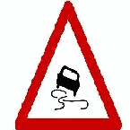

🔁 錯題特訓庫 (4 題待複習)
做錯的題目會自動保存在這裡。只要連續答對 2 次就會光榮移出！消除所有錯題，駕照輕鬆到手！💪
💡
移出機制：每題只要連續答對 2 次（✔✔），系統就會自動移出錯題庫！
🚀 一鍵複習全部 4 題 ➔
Q6. 關於機車載物的規定，下列何者不正確？
1
得載運高於騎士肩膀以上之貨物
✔ 正確解答
2
寬度不得超過把手外緣 10公分
3
伸出車尾部分，自後輪軸起不得超過 50公分
✖ 你的上次選擇
👉 請看圖，選出正確的答案。

官方題庫圖檔：M0067.png（實際題幹為空）
1
路面高突
✖ 你的上次選擇
2
路滑
✔ 正確解答
3
禁止超車
Q2. 機車附載物品，寬度不可超過車輛把手外緣：
1
10公分
✔ 正確解答
2
2 公尺
✖ 你的上次選擇
3
1公尺半
Q16. 若機車附載人員或物品違反規定，將處罰誰？
1
乘客
2
機車駕駛人
✔ 正確解答
3
機車駕駛人及乘客
✖ 你的上次選擇
🏆✨
太棒了！目前沒有任何錯題！
你已經將所有先前做錯的題目全部挑戰成功，連續答對 2 次光榮移出！你的騎乘觀念非常扎實，保持這個好狀態！